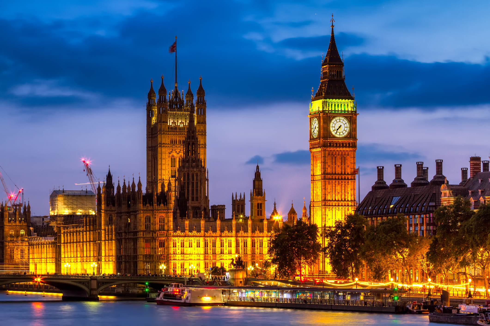
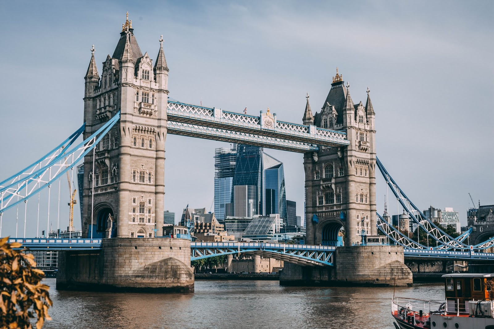
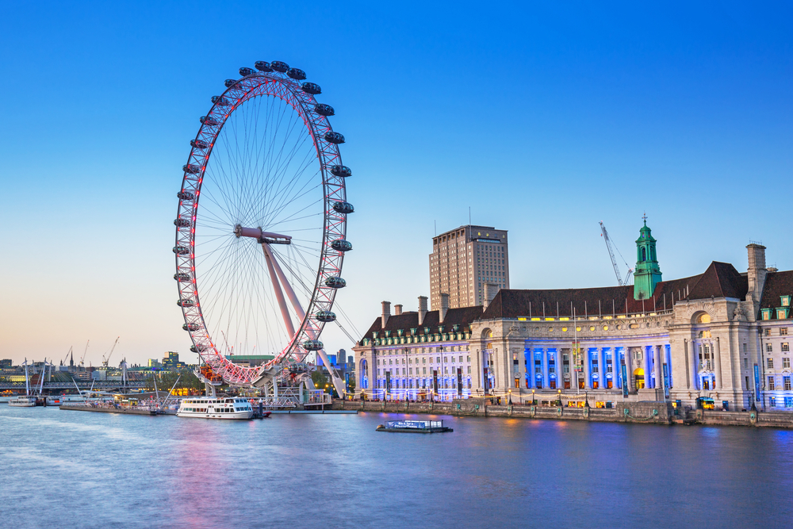
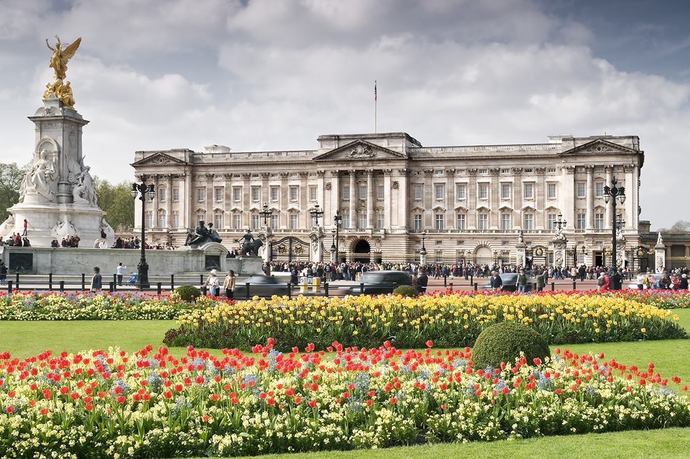
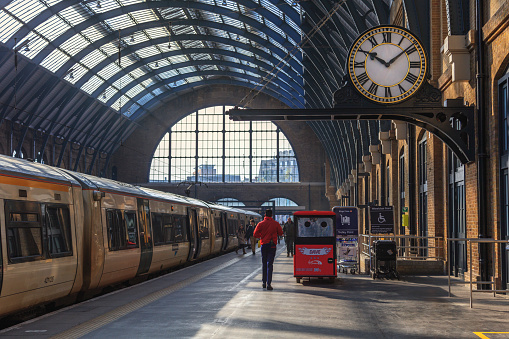

Londres, capital da Inglaterra e do Reino Unido, é uma cidade do século 21 com uma história que remonta à era romana. Seu centro abriga as sedes imponentes do Parlamento, a famosa torre do relógio do Big Ben e a Abadia de Westminster, local de coroação dos monarcas britânicos. Do outro lado do rio Tâmisa, a roda gigante London Eye tem vista panorâmica do complexo cultural da margem sul e de toda a cidade.
A cidade mostra uma face dinâmica e divertida, com museus maravilhosos como Tate Modern e National Gallery (alguns com entradas gratuitas!), com seus pubs movimentados, lojas de roupas bacanas e o obrigatório roteiro real. Afinal, em tempos de Kate e William, mesmo os mais descolados vão dar uma espiada na Abadia de Westminster e na troca da guarda em Buckingham.
3 PONTOS TURISTICOS PARA VISITAR EM LONDRES
Tower Bridge
 Um dos pontos turísticos mais famosos de Londres, a Tower Bridge é uma das pontes que une os dois lados do Rio Tâmisa.
A Tower Bridge foi construída em 1894 sobre o Rio Tâmisa e é uma ponte levadiça, se erguendo para barcos maiores passarem por baixo dela centenas de vezes por ano.
Em sua origem, a ponte se erguia através de máquinas a vapor, hoje já são usados recursos eletrônicos para tal.
Já foi cenário para vários filmes como Bridget Jones, Tomb Raider, Velozes e Furiosos 6, Missão Impossível, 007: O Mundo não é o Bastante, entre outros.
Hoje, a Tower Bridge é a ponte de Londres mais visitada e uma das maiores atrações turísticas do país, além de ser uma das pontes mais famosas do mundo.
London Eye
 A London Eye é a escolha perfeita se você é daqueles que ama um ponto turístico com pôr do sol (e o de Londres é um espetáculo) ou apenas gosta de aproveitar a vista de uma cidade lá do alto.
A estrutura é super perto do Palácio de Westminster, 10 minutos de caminhada, o que é ótimo pois você pode fazer um passeio seguido do outro.
São 135 metros de altura que te permitem uma vista completa de Londres, em grandes cabines que comportam mais de 20 pessoas.
O passeio dura em média 30 minutos, custa em torno de 24 libras e vale muito a pena, mesmo em épocas de fila (verão). Por isso, vale a pena comprar
ingressos antecipados para não perder tempo esperando.
Durante a maior parte do ano o ponto turístico funciona das 11h às 18h horas. Já nos três meses de verão o horário de funcionamento é das 10h às 20h30.
Palácio de Buckingham
 O Palácio de Buckingham é um passeio clássico, principalmente se você tem interesse pela família real britânica e se quer ver a troca da guarda.
É a residência oficial da rainha em Londres, o que torna o ponto turístico muito visitado. Traduz também toda aquela empolgação do país pela família real.
A construção tem mais de 300 anos e é um show de decoração à parte.
Muitos ficam na dúvida se é possível visitar o interior do palácio por ele ser residência oficial da rainha, e a resposta é… SIM! No entanto, a visitação
fica aberta somente por dois meses durante o ano e o ingresso pode variar de 20 a 40 libras, dependendo do passeio que você escolher.
A Troca da Guarda também é um momento muito interessante e emblemático de conhecer, bem cultural e tradicional. Guardas saem do
Palácio St. James e se juntam a outro time de guardas no Palácio de Buckingham, são 45 minutos de marcha com direito a banda e músicas.
BÔNUS!
Estação King’s Cross -
Plataforma 9 ¾

Apesar de parecer mais moderna depois da restauração, a estação foi construída em 1852 pela Great Northern Railway. De lá partem trens para o norte do Reino Unido,
incluindo Cambridge, York, Newcastle e Edinburgh.
E é lá que você encontra a plataforma 9 ¾, ao lado das plataformas 9 e 10.
Para os fãs de Harry Potter, este é um dos pontos turísticos de Londres mais imperdíveis.
A Plataforma 9 ¾, onde o personagem principal da história de JK Rowling entrava para pegar o trem rumo a Hogwarts, fica na famosa Estação King’s Cross.
Na parede, foram incluídas até mesmo uma placa indicando o número inusitado da plataforma, e um carrinho com bagagem como se já estivesse meio caminho
andado para dentro da parede. É bem divertido para tirar fotos, caso você seja fã da saga.
Você também pode se interessar por: